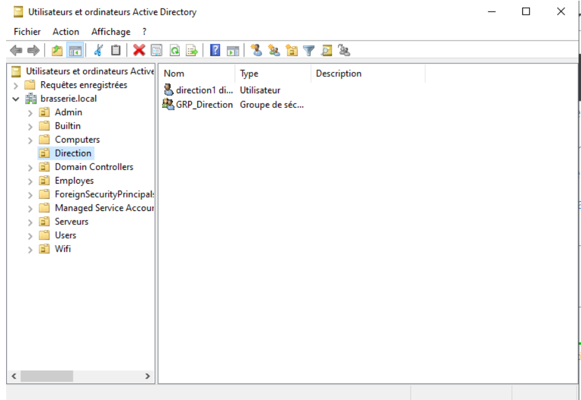

L'Active Directory (AD) est un service d'annuaire Microsoft qui centralise la gestion des identités, des utilisateurs, des ordinateurs et des ressources du réseau. Le domaine créé est brasserie.local.
L'AD repose entièrement sur le DNS pour fonctionner. Sans DNS, les PC clients ne peuvent pas localiser le Contrôleur de Domaine et rejoindre le domaine.
| Paramètre | Valeur |
|---|---|
| Nom de domaine | brasserie.local |
| Nom NetBIOS | BRASSERIE |
| IP du serveur | 192.168.136.51 |
| Mot de passe Administrateur | Admin123 |
| Mot de passe DSRM | Brasserie@2026! |
| Paramètre | Valeur |
|---|---|
| Adresse IP | 192.168.136.51 |
| Masque | 255.255.255.240 |
| Passerelle | 192.168.136.49 |
| DNS primaire | 192.168.136.51 (lui-même) |

| OU | Utilisateurs | Mot de passe |
|---|---|---|
| Employes | employe1, employe2 | Brasserie@2026 |
| Direction | direction1 | Brasserie@2026 |
| Admin | admin1 | Brasserie@2026 |
Résultat : brasserie.local est résolu par le serveur Windows, et google.com est transféré au DNS de la salle.
Problème 1 — Erreur TCP/IP lors de la promotion
Cause : Le serveur n'avait pas d'IP fixe configurée.
Solution : Configurer une IP fixe avant de relancer l'assistant AD.
Problème 2 — PC client ne trouve pas le domaine
Cause : Le DNS du PC client pointait vers 192.168.117.181 qui ne connaît pas brasserie.local.
Solution : Modifier l'option 006 dans le DHCP pour distribuer 192.168.136.51 comme DNS.
Problème 3 — Mauvais mot de passe pour rejoindre le domaine
Cause : Utilisation du mot de passe Brasserie@2026! au lieu de Admin123.
Solution : Le mot de passe du compte Administrateur du serveur est Admin123.